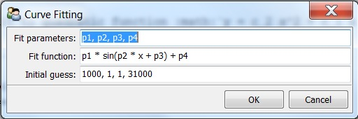

Fitting¶
Linear fit¶
Fit to linear function \(y = c_1 x + c_0\)
Quadratic fit¶
Fit to quadratic function \(y = c_2 x^2 + c_1 x + c_0\)
Polynomial fit¶
Fit to polynomial function of degree n: \(y = \Sigma c_n x^n\)
Curve fit¶
Use non-linear least squares to fit an arbitray function to data.
- Initial guess is very important to curve fit. Try to make close guess to some parameters.
- If fitted to polynomial function, better to use Polynomial fit.